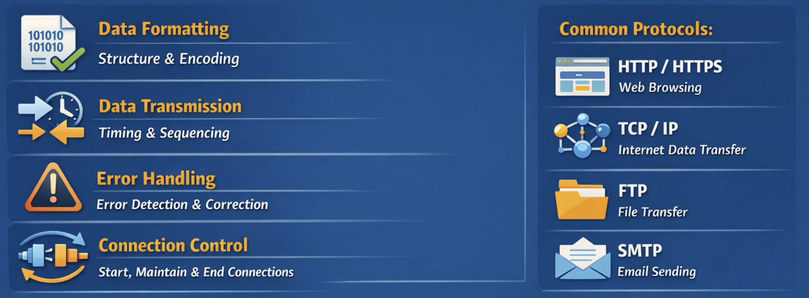
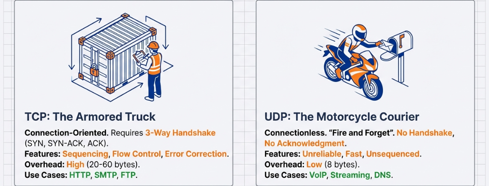

Network Security and Architecture

Instructor: Chris Fulton
Learning Objectives
- Analyze different types of networks addresses
- Describe the difference between physical and logical addresses
- Exam the two parts of the media access control (MAC) address
- Discuss the components of IPv4
- Binary/Decimal Conversion and Subnet Mask
- Discuss the components of IPv6
- Evaluate IPv6 format
- IPv6 advantages and differences vs IPv4
- Explore that evolution of Networking Protocols
- Discuss proprietary and standard protocols
- IP, TCP, UDP, and TCP/IP
- Switches and Routers
- Network Transmission and Traffic
- Switch Configuration and Management
- VLANs design and configuration
Network Addresses
Key Network Terminology
Logical/Physical Address
MAC Address
IP Address
IPv4
IPv6
Subnet Mask
Network Address Translation
Classful addressing
Static/Dynamic IP Address
Public/Privae IP Address
loopback/localhost address
Organizationally unique identifier (OUI)
Device ID
MAC table
Gateway
THE INVISIBLE ARCHITECTURE
Mastering Modern Wireless Networks: From RF Physics to Wi-Fi 7

Understanding Wireless Network Security and Architecture
💭 Discussion Question
"If you can't see it, can you really secure it?"
- How does the invisibility of wireless networks impact security?
- What makes wireless fundamentally different from wired networks?
- Can wireless ever be as secure as wired connections?
Take 3 minutes to discuss with a partner
THE PHYSICS OF TRAFFIC: Spectrum Landscape

Understanding the Wireless Highways:
- 2.4 GHz "City Street": High penetration, high congestion (3 non-overlapping channels)
- 5 GHz "Highway": High speed, line-of-sight (25 channels)
- 6 GHz "Superhighway": 1200 MHz spectrum, zero legacy interference (59 channels)
🎯 Activity: Match the Frequency Band
Drag each scenario to the most appropriate frequency band:
Scenarios (Drag Me!)
Best penetration
Balance of speed/range
Highest speed, no legacy interference
THE EVOLUTION OF SPEED (IEEE 802.11)

Key Milestones:
- 802.11a/g: 54 Mbps (2003)
- 802.11n (Wi-Fi 4): 600 Mbps
- 802.11ac (Wi-Fi 5): 7 Gbps
- 802.11ax (Wi-Fi 6): 11 Gbps
- 802.11be (Wi-Fi 7): 46 Gbps
THE WIRELESS ECOSYSTEM

Beyond Wi-Fi: Understanding the Complete Wireless Landscape
- 5G: Up to 10 Gbps, high density support, millimeter-wave frequencies
- Bluetooth: Classic (audio) vs. BLE (IoT/Low Energy)
- IoT Protocols: Z-Wave, ANT+ (Mesh & Sensors)
THE HARDWARE ANATOMY

Access Point Types:
- Autonomous (Thick): Standalone brain
- Lightweight (Thin): Controller managed (CAPWAP)
Antenna Types:
- Omni-Directional: 360° coverage (lightbulb)
- Directional High-Gain: Focused beam (flashlight)
🎯 Activity: Access Point Deployment
Drag each AP type to the appropriate deployment scenario:
AP Types
NETWORK TOPOLOGIES & MODES

Ad Hoc Mode (IBSS)
- Peer-to-Peer Connection
- Decentralized
- Non-scalable
- Prone to collisions
Infrastructure Mode
- Centralized Control (AP)
- Scalable
- Roaming support (10% overlap)
- Extended Service Set (ESS)
THE BLUEPRINT: Site Surveys & RF Planning

Survey Types:
- Predictive: Software modeling before deployment
- Passive: Listening only (RSSI/SNR analysis)
- Active: Connected throughput testing
RF Obstacles: Reflection, Refraction, Absorption (-3dB to -12dB)
💭 Discussion Question
Why is RF planning critical for wireless networks?
- What factors affect wireless signal propagation?
- How does material composition impact RF signals?
- Why can't we just add more access points for better coverage?
Group discussion: 5 minutes
⚠️ WIRELESS SECURITY THREATS
THE INVISIBLE ARCHITECTURE OF VULNERABILITIES
Understanding the unique security challenges of wireless networks
THE SIEGE: The Invisibility Paradox

"If you can hear it, you can hack it."
- The Medium: Shared air is accessible to everyone (no physical port required)
- The Trap: Users feel safe because the attacker is invisible
- The Leak: Management frames broadcast network details in clear text
PASSIVE ATTACKS: Surveillance

Packet Sniffing
Capturing raw frames
Unencrypted HTTP reveals credentials
Wardriving
Mapping networks via GPS
"War Chalking" symbols
Bluetooth Recon
Device discovery
Vulnerability scanning
🎯 Activity: Classify the Threat
Drag each attack type to its category:
Attack Types
(Surveillance/Reconnaissance)
(Direct Interference)
(Identity Spoofing)
THE MASQUERADE: Impersonation Attacks

Evil Twin Attack:
- Attacker clones legitimate SSID and MAC address
- Broadcasts stronger signal to attract victims
- Man-in-the-Middle (MitM) position achieved
- All traffic flows through attacker's device
DENIAL & DISRUPTION

Deauthentication Attack
- Spoofing management frames
- Forces client disconnect
- Captures handshakes for cracking
RF Jamming
- Obliterates Signal-to-Noise Ratio (SNR)
- Creates massive noise floor
- Renders wireless unusable
👥 In-Class Activity: Attack Scenario Analysis
Scenario:
A coffee shop offers free Wi-Fi called "CoffeeHouse_Guest". You notice your connection is unusually slow, and when you check available networks, you see two identical SSIDs with the same name but different signal strengths. Some of your colleagues report being disconnected repeatedly.
Questions to discuss:
- What type(s) of attack might be occurring?
- What should you do immediately?
- How could this have been prevented?
- What signs indicate a malicious network?
Break into groups of 3-4: 10 minutes
THE FORTRESS: A History of Failure

WEP (Wired Equivalent Privacy)
- Static keys
- 24-bit Initialization Vectors (IVs)
- Cracked in minutes via IV collisions
- MUST BE DISABLED
WPS (Wi-Fi Protected Setup)
- The "Push Button" Vulnerability
- Only 11,000 PIN possibilities
- Brute-forced via Reaver attack
- Should be disabled
MODERN ENCRYPTION: The WPA Evolution

| Protocol | Technology | Description | Status |
|---|---|---|---|
| WPA (TKIP) | Temporal Key Integrity | The Band-Aid. Rotates keys per packet. Reused WEP hardware. | Legacy |
| WPA2 (AES-CCMP) | Advanced Encryption Standard | The Standard. Government-grade encryption. Vulnerable to offline dictionary attacks. | Current |
| WPA3 (SAE) | Simultaneous Authentication of Equals | The Future. Forward Secrecy. Protected Management Frames (PMF). | Modern |
🎯 Activity: Match Security Features
Drag each security feature to the correct protocol:
Security Features
DEFENSE IN DEPTH: Enterprise Strategies

Multi-Layer Security Approach:
- WIPS (Wireless Intrusion Prevention): Detect and prevent rogue APs
- 802.1X Authentication: Enterprise-grade user authentication
- Geofencing: Location-based access control
- Network Segmentation: VLANs and ACLs
- WPA3-Enterprise: 192-bit security mode
💭 Discussion Question
Is wireless security always playing catch-up?
- Why does wireless security seem to follow attack discovery rather than prevent it?
- Can we ever achieve "proactive" wireless security?
- What role does user education play in wireless security?
- Should public Wi-Fi networks be considered inherently insecure?
Partner discussion: 4 minutes
THE FUTURE OF THE FORTRESS

"Wireless is a balance of physics and risk."
By mastering the invisible architecture, we achieve the reliability of a wire with the freedom of radio.
🏗️ Final Project Activity: Design Your Wireless Network
Scenario:
You are designing a wireless network for a 3-story office building with 200 employees. The building has a mix of conference rooms, open office spaces, and individual offices.
Requirements:
- Select appropriate frequency bands for different areas
- Determine AP placement and antenna types
- Choose security protocols and authentication methods
- Plan for guest network isolation
- Consider IoT device requirements
- Address potential security threats
Deliverable: Create a network diagram and justify your design choices.
Groups of 4: 20 minutes + 5 min presentation
🎓 Knowledge Check
- What are the three main frequency bands used in modern Wi-Fi?
- What is the difference between an Autonomous AP and a Lightweight AP?
- Explain the "Invisibility Paradox" in wireless security.
- What makes Evil Twin attacks effective?
- Why was WEP considered fundamentally broken?
- What improvement does WPA3 provide over WPA2?
- What is the purpose of a WIPS system?
📚 Additional Resources & Next Steps
Recommended Tools for Learning:
- Wireshark: Packet analysis and protocol understanding
- inSSIDer: Wi-Fi network scanner and analyzer
- Ekahau: Professional site survey software
- Aircrack-ng: Wireless security auditing (ethical use only)
Further Study Topics:
- Wi-Fi 7 (802.11be) features and deployment
- Enterprise RADIUS authentication
- Wireless mesh networking
- 5G and Wi-Fi convergence
- IoT security in wireless environments
🎯 Key Takeaways
- ✅ Wireless networks operate across multiple frequency bands (2.4GHz, 5GHz, 6GHz)
- ✅ RF planning and site surveys are critical for optimal performance
- ✅ Wireless security is fundamentally different from wired networks
- ✅ The "invisibility" of wireless creates unique vulnerabilities
- ✅ Multiple layers of defense are essential (Defense in Depth)
- ✅ WPA3 and modern protocols address legacy vulnerabilities
- ✅ Understanding the physics of RF is crucial for network design
Networks
- Physical addresses → Who are you on this local network?
- Logical addresses → Where are you on the global network (the internet)?

What are the distinct purposes of each address?


Take a look at the MAC address on your modem. Search this site to who is the manufacturers.


The Subnet Mask Defines the Boundaries
Distinguishing the Network from the Host

Activity - Let me Guess!!

Think of a number between 1 - 60
Do not share this number with the instructor. The instructor will magically guess your number
How did I guess the number?

Subnetting by Hand
Conversion to Binary Activity
Convert the IPv4 Address and MAC Address to binary
IPv4 Address: 192.168.12.1
MAC Address: 00:1B:63:3C:4D:5E
Network Protocols
Key Terminology
Proprietary & Standard Protocol
Port
Socket
Encapsulation
Segmentation
Error Control
Distance Vector Protocol
Convergence
Interior Gateway Protocols
Exterior Gateway Protocols
Link State Protocol
Internet Control Message Protocol (ICMP)
Communication Protocol
Simple network management protocol (SNMP)
Address Resolution Protocol (ARP)
What is a protocol?
A set of agreed-upon rules and standards that define how devices communicate over a network
Various Tech. Orgs. define standard protocols: The Institute of Electrical and Electronics Engineers (IEEE), the Internet Engineering Task Force (IETF), the International Organization for Standardization (ISO), the International telecommunications Union (ITU), The World Wide Web Consortium (W3C)
What is a port?
A port is a numbered communication endpoint on a device that identifies which application or service should receive network data.
Range
Identified by numbers from 0 to 65,535Well Known ports: 0 - 1023
Registered ports: 1024 - 49,151
Dynamic/ Private ports: 49,152 - 65,535
Protocols
Works with protocols like TCP and UDPIP address = street address
Port Number = Specific Office
a port directs incoming and outgoing network traffic to the correct application.
Activity - Match Services to Port
Drag each service to its correct IP address and port number.
TCP vs UDP Characteristics
TCP
UDP
TCP vs UDP Comparison
TCP
Connection-based protocol with guaranteed delivery and ordered data
UDP
Connectionless protocol optimized for speed over reliability
Popular Network Protocols
Application Layer
- HTTP - HyperText Transfer Protocol (Web browsing)
- HTTPS - HTTP Secure (Encrypted web)
- FTP - File Transfer Protocol
- SFTP - SSH File Transfer Protocol
- SMTP - Simple Mail Transfer Protocol
- POP3 - Post Office Protocol
- IMAP - Internet Message Access Protocol
- DNS - Domain Name System
- SSH - Secure Shell
- RDP - Remote Desktop Protocol
Transport & Internet Layer
- TCP - Transmission Control Protocol (Reliable)
- UDP - User Datagram Protocol (Fast)
- ICMP - Internet Control Message Protocol
- IGMP - Internet Group Management Protocol
- IP - Internet Protocol (v4 & v6)
Link Layer
- Ethernet - Wired LAN
- Wi-Fi (802.11) - Wireless LAN
- ARP - Address Resolution Protocol
- PPP - Point-to-Point Protocol
Distance Vector Routing Protocol
- Overview: Routers share routing information with neighboring routers periodically
- Algorithm: Bellman-Ford algorithm - calculates best path based on hop count
- Examples: RIP (Routing Information Protocol), IGRP (Interior Gateway Routing Protocol)
- Advantages:
- Simple configuration and implementation
- Lower resource requirements (CPU, memory)
- Disadvantages:
- Slow convergence time
- Limited scalability (max 15 hops for RIP)
- Count-to-infinity problem
| Characteristic | Distance Vector |
|---|---|
| Metric | Hop Count |
| Updates | Periodic (every 30s) |
| Convergence | Slow |
| Bandwidth Usage | High |
| Network Knowledge | Limited (neighbors only) |
Other Routing Protocols
Link State Routing Protocol
- How it works: Each router maintains complete topology map of the network
- Algorithm: Dijkstra's Shortest Path First (SPF) algorithm
- Examples: OSPF (Open Shortest Path First), IS-IS (Intermediate System to Intermediate System)
- Advantages: Fast convergence, efficient bandwidth usage, scalable
- Disadvantages: Higher CPU and memory requirements, complex configuration
BGP (Border Gateway Protocol)
- Type: Path Vector Protocol (Exterior Gateway Protocol)
- Purpose: Routes traffic between autonomous systems (AS) on the internet
- Characteristics: Policy-based routing, highly scalable, uses TCP port 179
- Use Case: Internet backbone routing, ISP interconnections
EIGRP (Enhanced Interior Gateway Routing Protocol)
- Type: Advanced Distance Vector / Hybrid Protocol (Cisco proprietary)
- Algorithm: DUAL (Diffusing Update Algorithm)
- Features: Fast convergence, minimal bandwidth usage, supports VLSM and CIDR
- Metric: Composite metric (bandwidth, delay, reliability, load)
- Advantages: Combines benefits of both distance vector and link state protocols
Network Management Protocol (NMP)
Definition: A suite of protocols defining processes, procedures, and policies to manage a network. NMP protocols monitor a network 24/7 in real time and provide network statistics to a network administrator.
Common NMP Protocols:
- ICMP (Internet Control Message Protocol)
- Sends error messages and operational information
- Used by ping and traceroute utilities
- SNMP (Simple Network Management Protocol)
- Collects and organizes network information
- Allows modification of network settings
- Popular platforms like SolarWinds Network Performance Monitor, Zabbix, Paessler PRTG, and Datadog, which are used for infrastructure monitoring and alerting.
Information NMP Provides:
| Metric | Description |
|---|---|
| Status of a Host | Current operational state of network devices |
| Host Availability | Whether devices are reachable and responsive |
| Network Latency | Time delay in network communication |
| Packet Loss | Percentage of packets that fail to reach destination |
| Network Errors | Transmission errors and network issues |
SSL/TLS Security Protocol
Secure Sockets Layer (SSL) and Transport Layer Security (TLS) are cryptography protocols used to provide secure communication between devices over a network.
- TLS replaced SSL in 1999 - TLS is more secure, but "SSL" term is still widely used
- OSI Layer 6 (Presentation Layer) - Implemented on top of TCP to encrypt Application Layer protocols
- SSL Certificate: Issued by certificate authority, authenticates a website and provides secure connection
- Encryption: Uses encryption algorithms to scramble transmitted data; destination device decrypts for presentation
Applications Using SSL/TLS:
- Email - Secure email transmission
- Instant Messaging - Encrypted chat
- VoIP - Voice over IP security
- HTTPS - Hypertext Transfer Protocol Secure
SSL/TLS Communication Flow
established session keys

Operates at OSI Layer 6
Network Transmission
Switches & Routers
From Frames to Tunnels
A Visual Guide to Network Architecture
Local Segment
Routing Decision
Tunnel Traffic Flow
Scope: Data Unit → Local Switching → VLAN Segmentation → Routing → Encapsulation
The Anatomy of a Digital Shipment
ETHERNET FRAME (Layer 2)
Physical Instruction
(Next Hop)
(Contains IP Packet)
IP PACKET (Layer 3)
Logical Address
(Ultimate Destination)
(Data)
How Switches Think: The Local Traffic Cop
Switch Decision Process
Destination MAC in CAM Table → Direct Send to specific port
Destination MAC not in CAM Table → Send to ALL ports
CAM Table Example
| Port | MAC Address | VLAN |
|---|---|---|
| Fa0/1 | 00:1A:2B:3C:4D:5E | 1 |
| Fa0/2 | 00:1A:2B:3C:4D:5F | 1 |
| Fa0/3 | 00:1A:2B:3C:4D:60 | 10 |
Switch Process:
- Frame arrives at switch
- Switch checks destination MAC
- Looks up MAC in CAM table
- Forwards to specific port OR floods all ports
The Noise Problem: Flat Networks
The Flat Network Issue
All devices on a single broadcast domain receive ALL broadcast traffic (ARP, DHCP, Printers)
Consequences:
Management data mixes with Guest data - no isolation
Every device must process every broadcast "shout"
Isolated per port, but Broadcast Domain is the entire switch
Visual: Broadcast Storm
↓
Switch floods to ALL ports
↓
ALL devices (Printers, Servers, PCs) must process
Result: Network congestion and CPU waste
Virtual Walls: VLANs (Logic Over Location)
VLAN = Logical Grouping Independent of Physical Location
192.168.10.0/24
192.168.20.0/24
192.168.30.0/24
- Security: Traffic isolation between departments
- Performance: Reduced broadcast domains
- Flexibility: Logical grouping regardless of physical location
- Management: Easier to apply policies per VLAN
The Language of Tags: 802.1Q
VLAN Tagging Process
Untagged traffic → Single VLAN only
Tagged traffic → Carries multiple VLANs
Key Concepts
- Native VLAN: Traffic that travels the trunk without a tag
- Default: VLAN 1
- Security best practice: Change native VLAN
- Trunk Link: Carries multiple VLANs between switches
- Uses 802.1Q tagging
- Both ends must agree on allowed VLANs
- Access Port: Connects end devices
- Assigned to one VLAN
- Removes/adds tags automatically
Scaling with VXLAN: Breaking the Limit
Traditional VLAN Limit
Maximum VLAN IDs
(12-bit identifier)
Problem: Data centers run out of VLANs in multi-tenant cloud environments
VXLAN Solution
Maximum VNI (VXLAN Network Identifiers)
(24-bit identifier)
Solution: Massive scalability for modern cloud infrastructure
VXLAN Architecture
VTEP (VXLAN Tunnel End Point): Encapsulates/decapsulates VXLAN traffic
(VNI)
Use Case: Multi-tenant data centers, cloud providers, large enterprise networks
The Gateway: Escaping the Local Network
Router Functionality
Routers operate at Layer 3 and make forwarding decisions based on IP addresses.
| Network | Next Hop | Interface |
|---|---|---|
| 192.168.1.0/24 | Directly Connected | Port 0 |
| 10.0.0.0/8 | Directly Connected | Port 1 |
| 0.0.0.0/0 | ISP Gateway | Port 2 |
Routing Process
- Receive packet on ingress interface
- Check destination IP in routing table
- Longest prefix match determines next hop
- Rewrite MAC addresses for next hop
- Forward packet out egress interface
- Decrement TTL (Time To Live) by 1